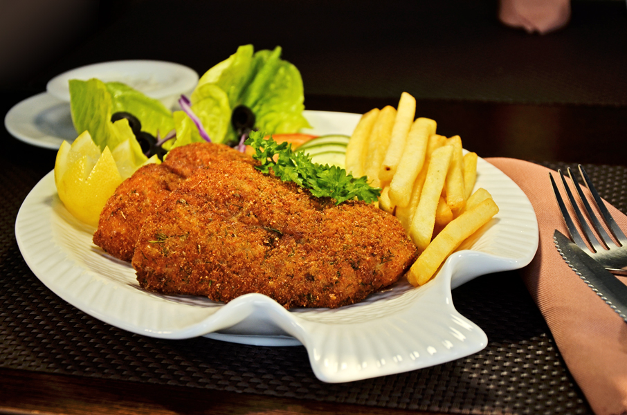

Whether you are celebrating a milestone, hosting a corporate gathering, or simply craving an extraordinary evening — Browniz is built for moments that matter. We tailor every detail to turn your occasion into an experience you will never forget.

Whether you are celebrating a milestone, hosting a corporate gathering, or simply craving an extraordinary evening — Browniz is built for moments that matter. We tailor every detail to turn your occasion into an experience you will never forget.
.jpg)
Whether you are hosting a corporate function, product launch, or community gathering, our catering team delivers the same quality you find in our restaurant. Every item is prepared in-house on the day — no reheated trays, no shortcuts. We offer full-service catering with dedicated staff, or a delivery-only package for smaller events. Contact us at least one week in advance to plan your menu.
Hot and cold appetisers, grilled mains, salads, desserts, and a full beverages selection. We can accommodate dietary requirements including vegetarian, gluten-free, and halal-certified options. Minimum order for full catering: 20 guests.
Our private section seats up to 20 guests and can be arranged for formal dinners, round-table discussions, or relaxed family meals. A dedicated server is assigned to your table throughout the evening. You choose from our full à la carte menu or work with our chef on a custom set-menu for the group. Room hire is complimentary for bookings with a minimum food spend — contact us for current rates and availability.
Business dinners, client entertainment, anniversary celebrations, engagement dinners, and small graduation parties.

We offer two celebration packages. The Dine-In Package seats your group in our main hall with a reserved section, a welcome platter on arrival, a choice of two main courses per person, and a complimentary birthday dessert with candles. The Full Buyout Package gives you the entire restaurant exclusively for up to 80 guests, with a bespoke menu agreed in advance.
Celebrations must be booked at least five days ahead. A deposit is required to confirm. We accept requests Friday to Sunday evenings — contact us directly for weekday bookings.

Browniz is a short drive from Madinat Sultan Qaboos business district, making us a practical choice for weekday working lunches and after-work team dinners. We offer a streamlined corporate menu with two starters, four mains, and a dessert selection, designed to keep service fast without sacrificing quality. Split billing and receipt-ready invoicing available on request.
Groups of 8 or more should reserve in advance. We guarantee your table is held for 15 minutes past your booking time. Call us or use the reservation form on our Contact page.

Our takeaway service runs during all opening hours. Orders can be placed by phone and are ready within 20–30 minutes depending on the item. We package all food in thermal containers to maintain temperature and presentation. Delivery is available within a 10 km radius of our Al Madina Plaza location — call us to confirm your area before ordering.
Call +968 9232 2927 or +968 9762 0155. Opening hours: Monday–Saturday 15:00–22:00, Friday 17:00–22:00.